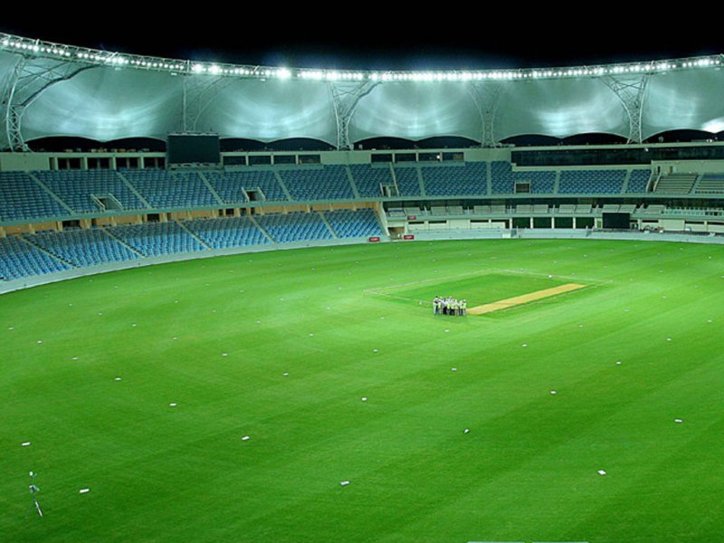

My favourite sport is cricket it is a bat and ball game played between players of two teams. Each team has 11 players. Two teams always has set of batsmen and bowlers. Its common to have four good batsmen and four good bowlers two or three players are usually able to bowl and bat both.
Ground
The cricket ground has diameter of 130m. There is centralised pitch of 20m having wickets on both sides. On wickets there are stumps. The one side wickets are specified for bowling and other side is specified for bating.
Types of matches
There are three different types of matches in cricket. There is test match in which opponent team will bowl until all players are bowled. One day match has 50 overs. One team gives target of runs and opponent team has to achieve it within 50 overs. Most famous type if 20-20 in which teams are bounded for 20 overs.
International competition
Cricket is played at both national and international level. The international competition include world cup and campionship leagues 20 teams participate in t-20 world cup.